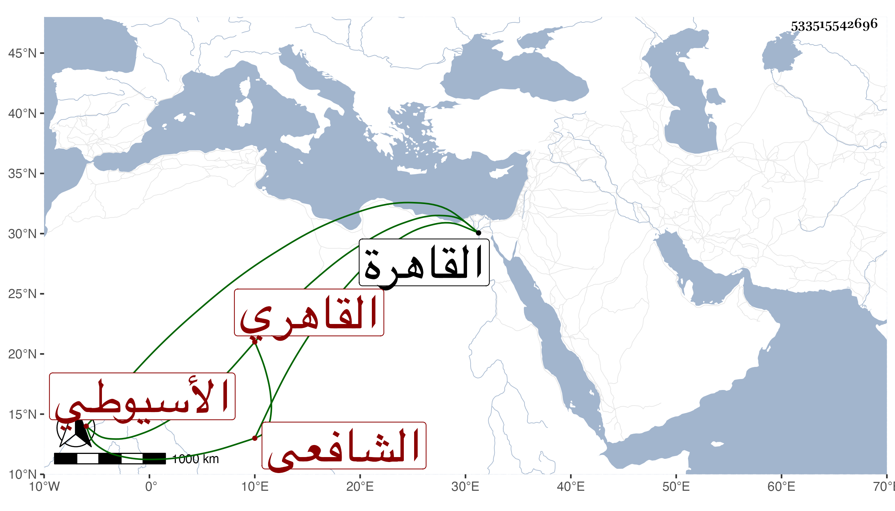

0902Sakhawi.DawLamic.ITO20230111-ara1.EIS1600.533515542696
Biography ID: 533515542696
737
محمد بن محمد بن محمد بن محمد بن علي بن عمر بن حسين أصيل الدين أبو اليسر بن المحب أبي الطيب بن الشمس الأسيوطي الأصل القاهري الشافعي سبط الجمال مغلطاي الناصري صاحب الجمالية القديمة والماضي أبوه . ولد في شعبان سنة ست وستين وثمانمائة بالقاهرة ونشأ بها في كنف أبيه فحفظ القرآن وأربعي النووي ومنهاجه وألفية النحو وجمع الجوامع وعقيدة الغزالي وعرض علي مع الجماعة وأخذ المنهاج عن الجوجري وفي التقسيم عند الشمس الأبناسي الضرير وأخذ عن الكمال بن أبي شريف وغيره وكتب على يس فأجاد بحيث يستعين به والده في كثير من المكاتيب واستقر ناظرا على مدرسة جده مع جهات من وظائف ومباشرات وغيرها وشارك الأخ ثم ابنيه في خزن كتب الباسطية وحج وزوجه أبوه وربما تعب من جهته بحيث استعان بتمراز في ضربه وأظن حاله صلح بعد موته .
